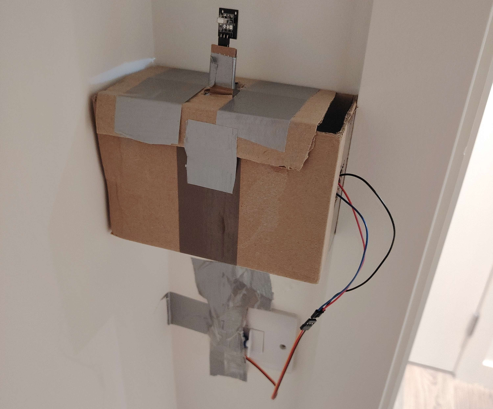
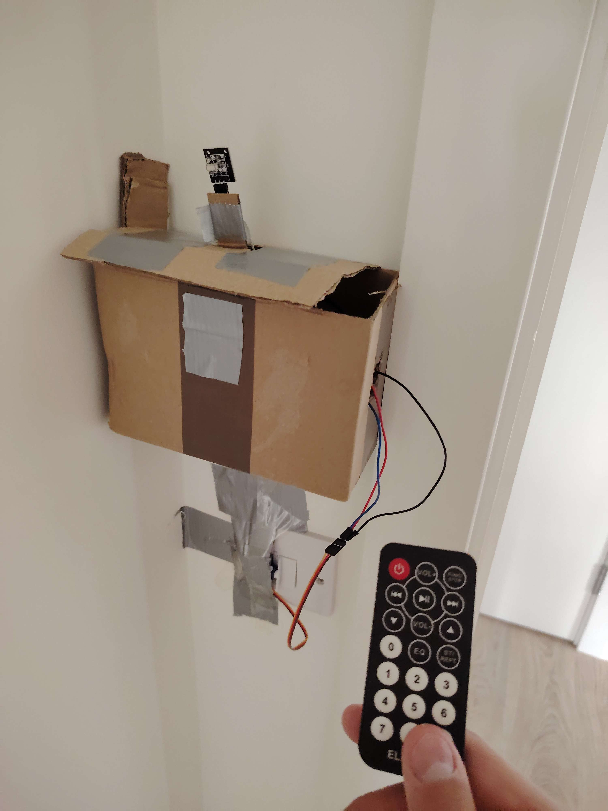
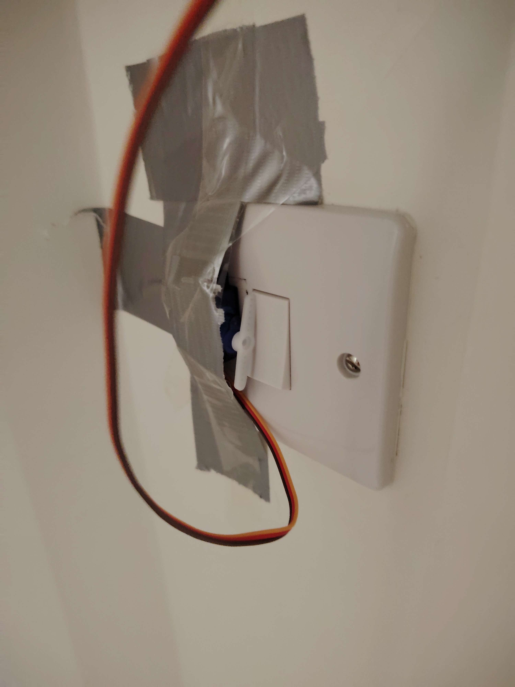
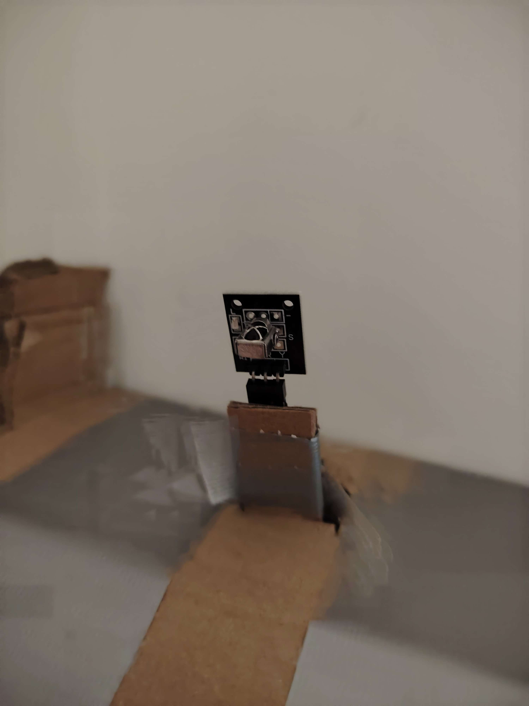
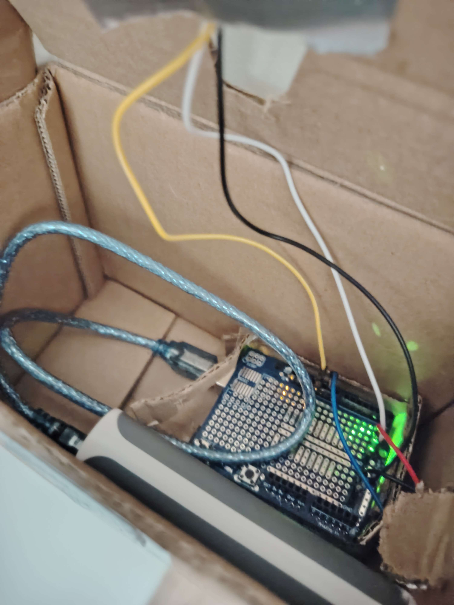

An Arduino project that uses an infrared remote to wirelessly control a servo, allowing it to turn a light switch on and off.

I built the project using an Arduino, an IR receiver module, a remote control, a 5V Power Bank, and a servo.
The project is powered by a 5V Power Bank which I put inside the Cardboard Case.
The Remote Controlled Light Switch works by the receiver module looking for inputs from the remote controller and when the right input is press so 0 or 1 it tells the Arduino board to rotate the servo a specific amount of degress just enough to physically turn the light switch on or off.
It was pretty hard to program it because I had to figure out how the IR receiver detected specifc input like if 1 is pressed the light turns on and if 0 is pressed the light turns off.
I really enjoyed making the project it was fun trying to figure out how to solve the problems I encountered for example how the box was going to stick on the wall and not fall off, or how to make the servo not push itself off the wall.



